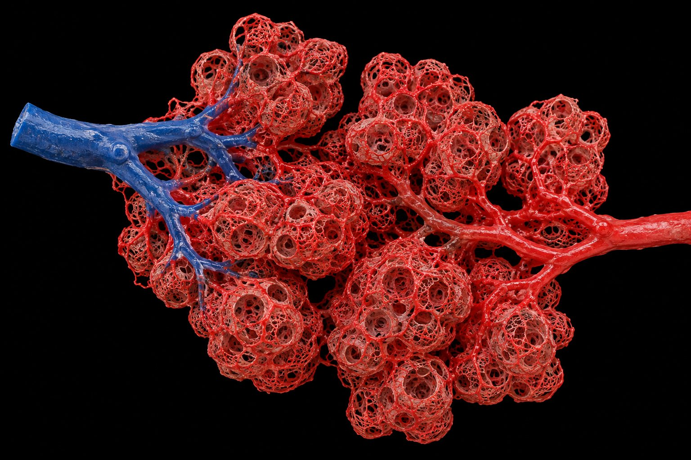
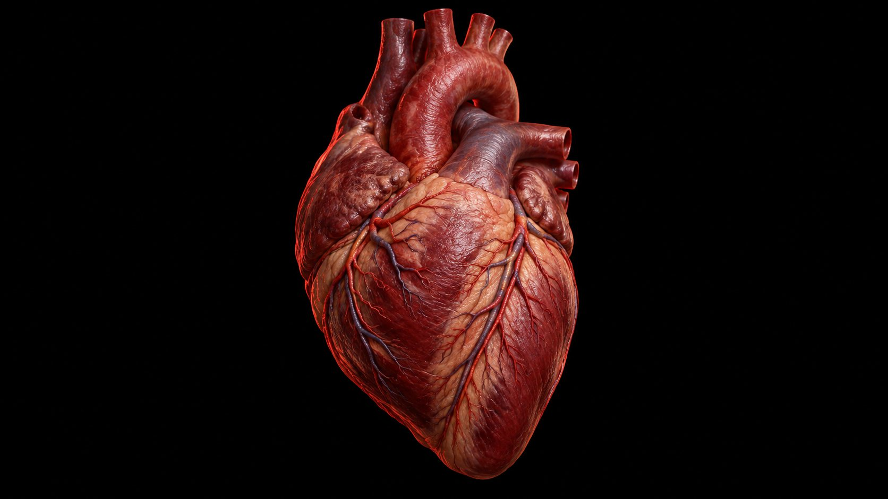
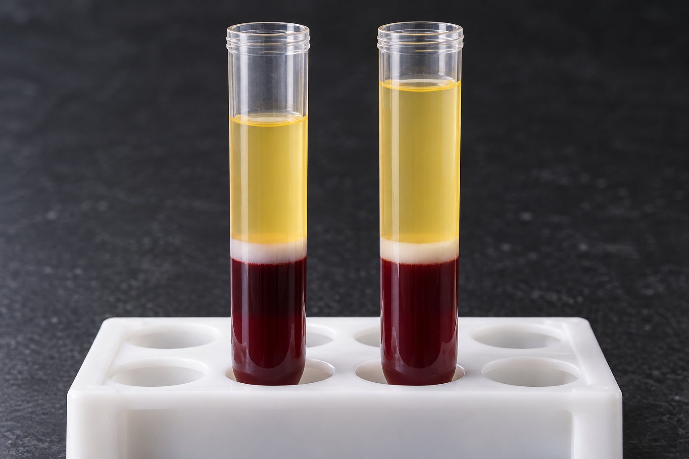

좌심실 → 1대동맥 → 온몸 모세혈관 → 대정맥 → 우심방
우심실 → 2폐동맥 → 폐 모세혈관 → 3폐정맥 → 좌심방
동맥·정맥은 피의 종류가 아니라 '심장에서 나가느냐, 들어오느냐'로 나눈다.


심근 산소 요구의 지표는 이중곱(심박수 × 수축기 혈압)이다.
다음은 학생들이 심전도와 심장 주기에 대해 발표한 내용이다.
- 가람 : P파는 심실이 탈분극할 때 나타난다.
- 나래 : QRS군 직후 심실은 등용적 수축을 한다.
- 다온 : 좌심실압이 대동맥압보다 높아지면 대동맥판이 열린다.
- 라희 : 운동 중에는 R-R 간격이 길어져 심박수가 증가한다.

| HR | SV | Q | |
|---|---|---|---|
| 안정 | 70 | 72 mL | 약 5 L |
| 최대 · 일반인 | 195 | 110 mL | 약 21 L |
| 최대 · 지구성 선수 | 190 | 180 mL | 약 34 L |
1부교감(미주)신경 활동 감소
2교감신경 활성 증가 + 부신수질 카테콜아민
이완기말 용적 (EDV)
정맥환류가 늘면 심실이 더 차고, 더 늘어난 만큼 세게 수축 → SV↑
1심실 수축력
교감신경·에피네프린 → 더 짜낸다 → 수축기말 용적↓ → SV↑
평균 대동맥압
나가야 할 문의 압력이 높으면 덜 나간다
| 이완기말 용적 | 수축기말 용적 | 1회 박출량 | 박출계수 | |
|---|---|---|---|---|
| 훈련 전 | 90 | 40 | 50 | 155.6 % |
| 훈련 후 | 95 | 38 | 57 | 260 % |
| 구분 | 이완기말 용적(mL) | ( ㉠ )(mL) | 수축기말 용적(mL) | 박출계수(%) | 총혈액량(L) |
|---|---|---|---|---|---|
| 훈련 전 | 110 | 60 | 50 | ( ? ) | 4.8 |
| 훈련 후 | 130 | 78 | 52 | ( ㉡ ) | 5.3 |
○ ㉠에 해당하는 용어를 쓰고, ㉡의 값을 쓸 것.
○ 총혈액량이 증가한 이유를 적혈구량과 혈장량의 상대적 기여도 측면에서 서술할 것.
- 근육펌프 동적 수축 + 판막
- 호흡펌프 들숨 때 흉강 내압↓ · 복강 내압↑
- 정맥 수축 교감신경이 정맥을 조임
계속 힘을 주면 혈관이 눌린 채 풀리지 않아 환류가 막힌다.
운동 185 / 85 · 우심방압 5
안정 70 × 120 = 8,400 · 운동 170 × 190 = 32,300
운동 부하 검사 결과 (소수점 이하 첫째 자리에서 반올림)
| 수축기 | 이완기 | 우심방압 | |
|---|---|---|---|
| 안정 시 | 110 | 70 | 2 |
| 운동 시 | 170 | 74 | 4 |
동정맥 산소차 약 5 mL/100 mL
동정맥 산소차 약 15 mL/100 mL
| 1회 호흡량 | 호흡수 | 분당 환기량 | 폐포 환기량 | |
|---|---|---|---|---|
| A | 300 | 30 | 9.0 L | 14.5 L |
| B | 600 | 15 | 9.0 L | 26.75 L |
| C | 1000 | 9 | 9.0 L | 37.65 L |
분당 환기량이 같아도 깊고 느린 C가 가장 많다.
| 파워(W) | 심박수 | 1회 박출량(mL) |
|---|---|---|
| 100 | 110 | 90 |
| 200 | 150 | 120 |
| 300 | 185 | 125 |
○ 체중 60 kg
○ 운동 시간 8분, 일량 96 kJ
※ 1 W = 1 J·s⁻¹
1심혈관 표류


산소를 더 뽑는다
모세혈관 밀도↑(지속훈련 약 +13 %) · 미토콘드리아↑(약 +25 %) → 동정맥 산소차↑
안정 시 심박수↓ (선수 40~50회/분)
혈장부터 빠진다
2~4주: 혈장량 약 −12 %
최대산소섭취량 2주 −4~7 %, 8주 −13~20 %
초기 감소는 혈액량, 이후 산소차↓
한 번 해도 내려간다
평균 5~8 mmHg, 최대 24시간
혈압이 높은 사람일수록 크다
주된 기전: 말초저항↓
대뇌 운동 영역 → 운동 시작과 동시에 심박수·혈압↑
근육의 Ⅲ군(기계수용기)·Ⅳ군(대사수용기) 구심신경
경동맥동·대동맥궁. 운동 중 꺼지지 않고 더 높은 설정점으로 재설정
- 혈류 추진력에서 우심방압을 안 뺌
- 박출계수 분모를 수축기말 용적으로 — 분모는 이완기말 용적
- W → J/s 환산, mL/100mL → mL/L 누락
- 심박수 초기 구간을 "교감 증가"만 — 핵심은 부교감 철회
- 근육펌프는 등척성 수축에선 안 된다
- P파 = 심방 탈분극 (심실 아님)
- 심혈관 표류: SV↓ HR↑, 심박출량 유지까지 쓴다
- 지구성 적응은 벽 두께가 아니라 좌심실 내강(용적)
- 폐포 환기량은 사강 150 mL을 빼고
- 운동 중 이완기 혈압은 거의 그대로
Q = HR × SV
VO₂ = Q × 동정맥 산소차
EF = SV ÷ EDV
MAP = DBP + ⅓ 맥압
추진력 = MAP − 우심방압
SV 3요인
이완기말 용적 · 수축력 · 평균 대동맥압
HR: 부교감 철회 → 교감
환류: 근육·호흡펌프·정맥 수축
우측이동
온도↑ · PCO₂↑ · pH↓ · 2,3-BPG↑
폐포 환기 = (VT − 150) × f
확산 ∝ 면적 × 분압차 ÷ 두께
재분배 · 혈압
근육 20 % → 84 %
수축기↑ 이완기≈
표류: HR↑ SV↓ Q 유지
좌심실 내강↑
혈장량 먼저↑ (가성 빈혈)
안정 HR↓ · 모세혈관·미토콘드리아↑
탈훈련은 혈장부터
아직 안 나온 것
압수용기 재설정 · 운동승압반사
이중곱 · 발살바 · 운동 후 저혈압
CO₂ 운반(중탄산 약 70 %)